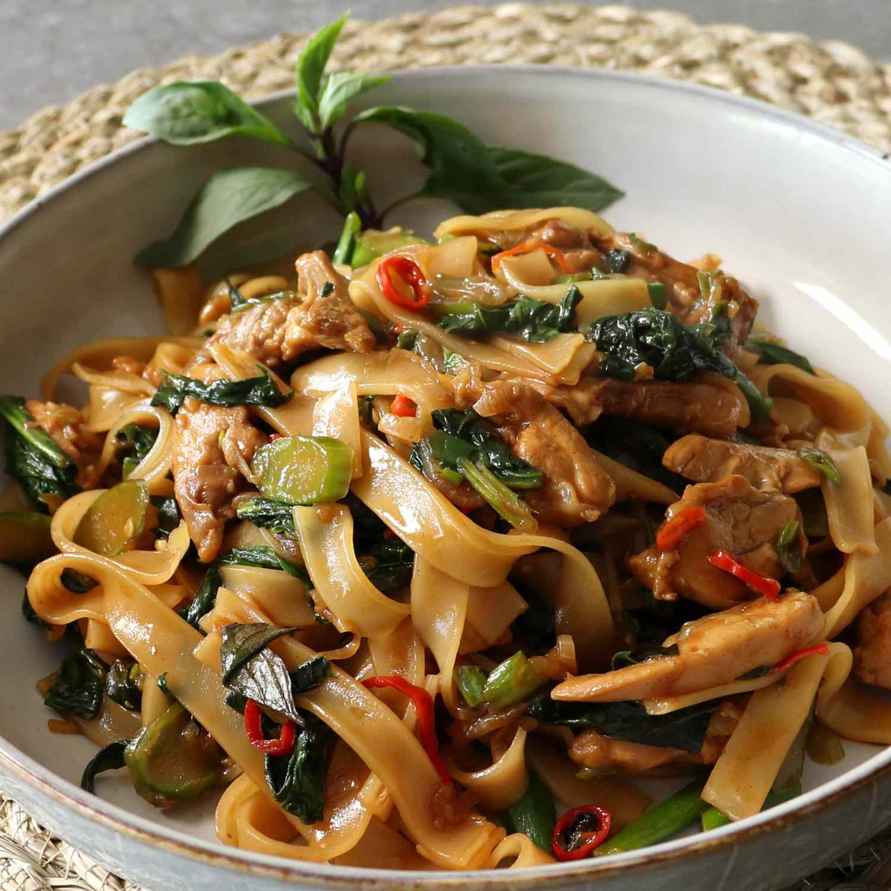

Drunken Noodles

Description
Drunken noodles are a dish from Thailand, featuring a blend of spices and vegetables
Ingredients
- Rice Noodles
- Tofu
- Soy sauce
- Siracha
- lime
- Onion
Steps
- Cut the tofu into squares, marinade it with the soy sauce, siracha and lime
- Cut the onion and fry in a wok
- Add the tofu and tofu marinade to the wok
- Prepare rice noodles to package directions then add to the wok
- Garnish with fresh basil if you like